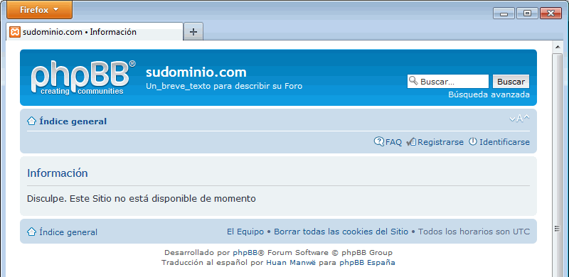
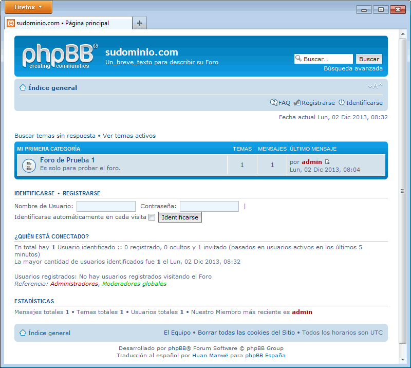

Estos ejercicios corresponden a una versión antigua de phpBB. No están actualizados a versiones más actuales porque desde el curso 2014/15 no estoy trabajando en clase phpBB ya que estoy dedicando más tiempo a otras aplicaciones. He mantenido estos ejercicios en los apuntes por si le pueden servir a alguien.
En esta lección se proponen ejercicios para conocer y utilizar phpBB. Se pueden consultar las soluciones de estos ejercicios de phpBB, aunque se recomienda intentar realizarlos primero sin recurrir a estas soluciones.
Foros: phpBB
Los foros son aplicaciones que permiten organizar discusiones entre muchos usuarios, que permanecen registradas para su consulta posterior. Existen muchos programas de foros. Uno de los más utilizados es phpBB, cuya primera versión se publicó en diciembre de 2000.
phpBB es software libre que se distribuye bajo la licencia GPL 2.0.
El aspecto y opciones del foro dependen del usuario empleado. Para realizar los ejercicios planteados en esta página, se pueden emplear simultáneamente varios navegadores, entrando en uno de ellos como administrador, en otro como usuario registrado y en otro como usuario no registrado.
En phpBB, las discusiones se organizan jerárquicamente:
Categoría (Category)
Es un tipo de foro especial que agrupa varios foros relacionados por algún criterio.
Foro (Forum)
Un foro es el elemento que agrupa las discusiones relacionadas por algún criterio.
Tema (Topic)
Un tema es una discusión que agrupa las intervenciones de los usuarios.
Respuesta (Reply)
Una respuesta es una intervención de un usuario.
phpBB (1) 1 - Descargar phpBB
En este ejercicio se trata de descargar y descomprimir phpBB en el servidor local.
Visite la página web del proyecto phpBB.
Descargue la versión phpBB 3.0.12 en inglés, publicada el 28 de septiembre de 2013. Se recomienda esa versión ya que estos ejercicios se han preparado para ella.
Si la versión phpBB 3.0.12 en inglés ya no está disponible en la web del programa, puede descargarla desde la página de Descarga de aplicaciones antiguas.
phpBB (1) 2 - Descargar la traducción al español de phpBB
En este ejercicio se trata de descargar y descomprimir la traducción al español.
Descargue la traducción al español de phpBB, versión español de España, tratamiento formal (de "usted").
Descargue la versión Español (usted) 1.0.6, publicada el 15 de octubre de 2013. Se recomienda esa versión ya que estos ejercicios se han preparado para ella.
Si la versión Español (usted) 1.0.6 ya no está disponible en la web del programa, puede descargarla desde la página de Descarga de aplicaciones antiguas.
phpBB (1) 3 - Instalar phpBB
En este ejercicio se trata de instalar phpBB.
Cree con phpMyAdmin un usuario de MySQL con nombre iaw_phpbb_1, contraseña iaw_phpbb_1 y base de datos iaw_phpbb_1.
Descomprima phpbb en la carpeta adecuada para poder ejecutarlo en el servidor local.
Descomprima el archivo de traducción y copie las carpetas a su lugar correspondiente.
Instale phpBB mediante su asistente de instalación. Estas son las opciones a elegir distintas de las predeterminadas.
Configuración de la base de datos
Nombre del servidor de la base de datos: localhost
Nombre de base de datos: iaw_phpbb_1
Usuario de base de datos: iaw_phpbb_1
Clave de base de datos: iaw_phpbb_1
Detalles del administrador
Nombre de administrador: admin
Contraseña de administrador: adminadmin
Email de contacto: Aunque no se tenga instalado un servidor SMTP, se puede escribir una dirección de correo válida
Al terminar la instalación, antes de abrir nuevamente phpBB, es imprescindible borrar, mover o cambiar el nombre del directorio /install. Si no se hace, se obtendrá la siguiente pantalla:

phpBB (1) 4 - Entrar en phpBB
En este ejercicio se trata de comprobar que phpBB funciona y se puede abrir una sesión como usuario administrador.
Abra la página principal de phpBB. El aspecto tiene que ser similar a éste:

Compruebe que puede entrar como usuario admin y contraseña adminadmin. Compruebe que puede entrar en los tres paneles de administración:
Panel de Control del Usuario
Panel de Control de Moderador
Panel de Administración
Cierre la sesión como administrador y vuelva a la página de inicio.
phpBB (1) 5 - Crear un nuevo usuario
En este ejercicio se trata de crear un nuevo usuario usuario_1 y comprobar que ese usuario puede crear un tema e intervenir en él, aunque el usuario administrador debe aprobar sus intervenciones. Se aconseja abrir cada usuario en un navegador distinto.
Registre un nuevo usuario con nombre usuario_1 y contraseña usuario_1 (es necesario rellenar un captcha).
Entre en phpBB como usuario usuario_1 y cree un nuevo tema en el Foro de Prueba 1. La creación del nuevo tema queda a la espera de la aprobación del administrador.
Entre en phpBB como administrador y apruebe el nuevo tema.
Como usuario_1, añada una respuesta en el tema. La respuesta del nuevo tema queda a la espera de la aprobación del administrador.
Como administrador, apruebe la respuesta.
Compruebe como usuario sin registrar que se pueden ver las aportaciones aprobadas.
phpBB (1) 6 - Modificar los permisos del usuario
En este ejercicio se trata de modificar los permisos del usuario usuario_1 para que sus intervenciones no necesiten aprobación para ser publicadas.
phpBB permite definir permisos al usuario tanto de carácter global como limitados a determinados foros.
Nota: Compruebe que el usuario no tiene intervenciones pendientes antes de modificar sus permisos o no podrá realizar el ejercicio.
Entre en phpBB como administrador y de al usuario_1 el Rol "Acceso al foro estándar", que le permite, entre otras cosas, participar sin necesidad de moderación.
Entre en phpBB como usuario usuario_1 y compruebe que no necesita la aprobación del administrador para crear nuevos temas o participar en ellos.
Compruebe como usuario sin registrar que se pueden ver las aportaciones aprobadas por el usuario usuario_1.
phpBB (1) 7 - Copia de seguridad
En este ejercicio se trata de realizar una copia de seguridad de phpBB, borrar completamente la instalación y restaurar la copia de seguridad.
Haga una copia de seguridad completa desde el propio phpBB. La copia de seguridad se guarda en una carpeta en phpBB3.
Guarde el archivo de la copia de seguridad en una carpeta diferente a la de phpBB.
Borre completamente phpBB:
borre la carpeta /phpBB3
elimine con phpMyAdmin el usuario de MySQL y su base de datos
Reinstale phpBB y su traducción al español (creando primero de nuevo el usuario de MySQL).
Restaure la copia de seguridad desde el propio phpBB.
Compruebe que se ha recuperado el contenido de los foros y compruebe que puede entrar como usuario_1.
phpBB (1) 8 - Modificar el estilo
En este ejercicio se trata de instalar un estilo diferente al predeterminado.
Abra la página web de phpBB en Internet y visite la página de demostración de estilos. Vea algunos estilos incluidos en esa demostración.
Abra el repositorio de estilos de phpBB en Internet y descargue alguno de los estilos (que se haya visto en la página de demostración o no).
Descomprima el estilo descargado en la carpeta adecuada.
Entre en phpBB como administrador admin e instale el estilo descargado como estilo predeterminado.
Compruebe como usuario sin registrar (por ejemplo) que se aplica el nuevo estilo. La captura siguiente corresponde al estilo MG Autumn.
Entre de nuevo en phpBB como administrador admin y restaure el estilo predeterminado prosilver.